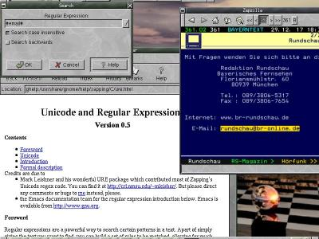
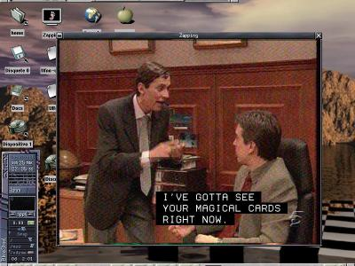

Zapzilla
Description
Zapzilla is the name of the Teletext browser built into Zapping. It is probably the most advanced software Teletext decoder around, at least it's the best one I have seen. ;-) Some of its outstanding features are:- Teletext Level 2.5/3.5 ("HiText") support, this includes:
- Arbitrary scaling & antialiasing of rendered pages.
- Regular expression Unicode searching in the page cache.
- Export filters to HTML, PNG, PPM, ASCII, ANSI, VTX.
- Wrapping and rectangular text and image selection.
- Bookmarks.
- Due to the scaling, it isn't as responsive as, say, AleVT. It really depends on how big your iron is, and the size of the window. To make a rough estimation, it takes about 0.1s to scale and render a 400x300 page. Not bad for scaling and antialias. But all the credit for this speed/slowdown is due to gdk-pixbuf, I wash my hands. :-)
- Zapzilla is tied to Zapping. That means tied to all the Gnome libraries. I don't have currently the time/will to untie it myself, but if some brave soul wants to take the challenge, here's my email address. Send petitions to write docs and release libvbi as a separate entity to Michael.
Screenshots
If you're not utterly impressed by now, here are the carefully crafted screenshots you've been waiting for:OK, many things:
{kind=link}
There are three TTX windows here, one of them is the Zapping main window acting as a TTX viewer. You can see the graphics in the page (Level 2.5). Note the arbitrary scaling, each TTX page has a different size.
The open dialog lets you export a page to the previously mentioned formats, this time I am exporting to an HTML page.
{kind=link}
Apparently nothing special here, just Galeon and Zapzilla...
until your neuronal network sees the pattern: "Perhaps the Url in Galeon has been
opened by clicking in the link that appears in the TTX page?". You are
completely right, so I don't need to explain anything. I will just tell
that email adresses and page numbers are clickable too. The cryptic message
in the bottom row is part of the TOP navigation.

{kind=link}
Zapzilla supports searching for regular expressions in
the page cache. I gave the "#email#" pattern to search for, the highlighted
text is the second match. The window in the back is the help window that
appears when you click the "Help" button. And in case you are wondering,
"#email#" isn't a regular expression, it's just a convenient alias
I added that expands into something as horrific as "([:alnum:]|[-~.]+@([:alnum:]|[-~.])+)
". Basically it matches email adresses. Similarly you can use the "#url#" alias to match WWW adresses, or any regexp you like.

{kind=link}
This isn't properly Zapzilla, but the subtitle overlay
built into Zapping in concert with the Closed Caption decoder built into
libvbi. Teletext subtitles are supported in the same way. Actually, the
Zapping mothership, subtitle overlay, Zapzilla and libvbi all participate
in the Neuromante and Wintermute of VBI decoding.
People
The nominees for best original bugs, features and chrome are:- Michael H. Schimek for the low levels of VBI, TTX & CC decoder and more good things in libvbi.
- Iñaki García Etxebarria for the GUI, the rendering and its overlay; the unicode regexp, selection and countless other pearls.
Download
The source code for this wonder is available as part of the source code for Zapping. Share and enjoy.